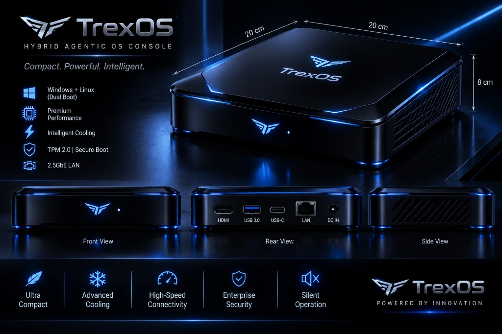

PURPOSE-BUILT
AUTONOMOUS SUITE.
Explore the deep architecture, telemetry guarantees, memory footprints, and kernel benchmarks of each I-Trex innovation.
TREXOS
Hybrid Agentic OS Console · TRX-01
Compact. Powerful. Intelligent. TrexOS is a purpose-built Hybrid Agentic OS Console engineered inside a precision 20 cm × 20 cm × 8 cm dark metallic chassis. Engineered with Windows + Linux dual-boot versatility, hardware TPM 2.0 with Secure Boot, intelligent cooling, and high-speed 2.5GbE connectivity, TrexOS serves as the dedicated hardware anchor for local AI agents, development workspaces, and autonomous systems.

Hardware Value Pillars
- Ultra Compact: Space-saving 20×20×8 cm desktop form factor engineered from dark anodized alloy.
- Advanced Cooling: Intelligent thermal vents maintaining sustained peak boost without thermal throttling.
- High-Speed I/O: HDMI 2.1, USB 3.0, USB-C/USB4 40Gbps, 2.5GbE LAN, and 19V DC IN.
- Enterprise Security: Hardware TPM 2.0 cryptographically verifying boot integrity at Ring 0.
- Silent Operation: Acoustic dampening optimized for whisper-quiet performance (< 18 dBA idle).
I-TRAX AEROHYDRA X-1
Specially Designed Autonomous Drone · TRX-02
The I-Trax AeroHydra X-1 is a specially designed autonomous drone engineered from first principles for critical mission reconnaissance, industrial infrastructure inspection, and high-speed telemetry relay. Built with an aerospace-grade aerodynamic carbon-composite airframe, onboard autonomous flight pathfinding, and sub-5ms encrypted telemetry mesh, the AeroHydra X-1 operates reliably in extreme atmospheric conditions with zero cloud dependency.
Tactical Capabilities
- Onboard Trajectory Navigation: Real-time path recalculation avoiding dynamic obstacles at up to 60 km/h with zero cloud ping.
- Encrypted Mesh Telemetry: Point-to-point broadcast mesh streaming flight diagnostics to ground stations and TrexVision servers.
- Modular Payload System: Instant hot-swap between high-resolution thermal imaging, optical 4K zoom, and 3D LiDAR sensors.
- Mission Failsafes: Dual-redundant IMU, triple compass alignment, optical flow localization, and autonomous return-to-home (RTH).
TREXVISION
AI Assistant of Trex System with Autonomy Servers · TRX-03
TrexVision is the autonomous AI assistant and intelligence server backend of the Trex system. Supported by dedicated autonomy servers, TrexVision orchestrates real-time task queues, cross-device spatial intelligence, and multi-robot fleet coordination. Operating with zero cloud lock-in, TrexVision links TrexOS consoles, Synap-X desktop robots, and AeroHydra drones into one unified autonomous command layer.
System Server Capabilities
- Fleet Orchestration: Real-time task synchronization across TrexOS consoles, Synap-X robots, and AeroHydra drones.
- Zero Cloud Lock-in: Dedicated on-premise autonomy servers ensure total operational independence from third-party APIs.
- Event Mesh Dispatch: Sub-10ms event queuing handling concurrent sensor streams and spatial coordinate mapping without packet drop.
SYNAP-X
Next-Gen Autonomous Desktop Robot & Physical AI Assistant · TRX-04
Synap-X is engineered from first principles by eliminating the core flaws and frustrating user complaints across Alexa, Siri, Google Assistant, and DIY "JARVIS" projects—such as uninvited chatter, high latency, deaf acoustic canceling, and rigid syntax errors. Powered by a local zero-latency daemon and motorized physical attention tracking, Synap-X directly solves these pain points across 5 essential pillars:
1. Speed & Execution (Fixing Latency & Offline Brick Failure)
- Zero-Latency Local Execution: Desktop and phone operations (volume, muting, audio switching, media pause, display sleep) run entirely on a local daemon via Wi-Fi/Bluetooth without pinging cloud servers.
- Offline Fallback Mode: Controls desktop processes, terminal scripts, and phone system toggles even when internet is down.
- Instant Silent Feedback: Replaces vocal acknowledgments with a 50ms tactile chime or LED pulse.
2. Conversational UX (Eliminating Upsells & Rigid Syntax)
- Zero Ads or Suggestions: Never interrupts tasks with upsells or "By the way..." prompts.
- Fuzzy & Natural Intent Parsing: Saying "nuke Chrome", "kill browser", or "close Google" executes the exact same kill command.
- Contextual State Awareness: Understands implicit references like "Close this" based on the focused window.
- Multi-Intent Chaining: Handles compound actions: "Mute my PC, enable phone hotspot, and open VS Code."
3. Audio & Acoustic Reliability (Solving "Deaf Assistant" Syndrome)
- Hardware AEC & Barge-In: Custom acoustic echo cancellation hears wake words instantly even during loud gaming or music playback.
- Directional Beamforming & Attention: Multi-mic array mechanically tilts or pans toward your voice, visually confirming focus.
- Whisper & Night Mode: Automatically detects hushed speech late at night, switching to OLED screen readout mode.
4. Cross-Device Handoff & 5. Safety Safeguards
- Unified Clipboard: Spoken commands like "Send clipboard to phone" sync text and snippets across systems instantly.
- Call Auto-Ducking: Automatically mutes background media when phone rings or meeting begins.
- Two-Step Voice Confirmation: Destructive commands require explicit verbal confirmation with OLED screen verification.
- Physical Hardware Kill Switch: Physical circuit-level switch disconnects microphones and cameras for absolute privacy.
READY TO DEPLOY?
Schedule a direct architectural consultation with Satyam and evaluate the I-Trex deterministic autonomous stack in your infrastructure.